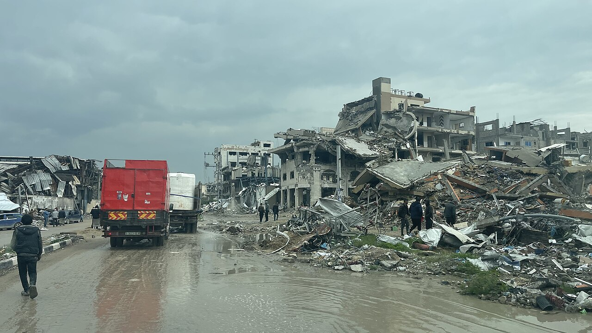

Nicht nur Bomben kosten Leben
Müll zwischen den Zelten, kein Abwasser, Seuchen, Kälte – und Kranke, die keine Behandlung bekommen. Die humanitäre und medizinische Lage im Gazastreifen, belegt mit Quellen.
Was das Leben in Gaza bedroht
Kachel antippen oder mit der Maus darüberfahren – auf der Rückseite stehen Details und Quelle.
66 % der Haushalte haben weniger als 6 Liter Trinkwasser pro Person und Tag. Der humanitäre Mindeststandard liegt bei 15 Litern.
OCHA, 13.11.2026 · SphereSo viel fester Abfall fiel bis März 2026 täglich an. Die provisorischen Deponien sind voll oder fast voll, die Hauptdeponien nicht erreichbar.
UNICEF, 29.05.2026Im September waren es sogar 60 %. Ohne Wasser, Seife und Abwasser breiten sich Krätze, Läuse und Hautinfektionen schnell aus.
OCHA, 13.11.202627.09. bis 31.10.2026: 294 wahrscheinlich virale, 119 wahrscheinlich bakterielle Fälle. 77 % der genauer erfassten Fälle waren Säuglinge unter einem Jahr.
OCHA, 13.11.2026Nach dem Starkregen ab 6. November 2026: über 9.000 Unterkünfte zerstört, über 5.000 Familien schliefen im Freien.
OCHA, 13.11.2026Laut WHO warten über 18.500 Patientinnen und Patienten auf eine Behandlung im Ausland, rund 4.000 davon Kinder. Mindestens 1.092 starben während des Wartens.
WHO, zitiert von MSFEtwa 11.000 Krebspatienten haben keinen Zugang zu fachärztlicher Behandlung oder Diagnostik. 55 % der wichtigen Chemotherapie-Mittel sind nicht vorrätig.
UN Palestine · OCHADazu 73 % des Materials für Herzoperationen. Insulin für Typ-1-Diabetes und Mittel für die Dialyse sind knapp.
OCHA nach Gesundheitsministerium, Okt. 2026Die Themen im Einzelnen
Zum Aufklappen antippen.
Müll und TrümmerWilde Deponien zwischen den Zelten
- Seit Oktober 2023 kommen die Stadtwerke nicht mehr zur Hauptdeponie Juhor ad-Dik; das Gebiet steht unter israelischer Kontrolle. Deshalb wuchs mitten in Gaza-Stadt eine riesige Ersatzkippe auf dem Firas-Markt (Reuters, 12.02.2026).
- Laut UNDP entstanden über 140 wilde Müllkippen nahe Wohngebieten und Lagern.
- In 80 % der Vertriebenenlager werden häufig Ratten und andere Krankheitsüberträger beobachtet (UNICEF, 29.05.2026).
- Laut UN-Umweltprogramm UNEP sind rund 61 Millionen Tonnen Trümmer entstanden; etwa 15 % davon könnten mit Asbest, Industrieabfall oder Schwermetallen belastet sein (Modellrechnung, 23.09.2025). Im Schutt liegen außerdem Blindgänger (WHO, 02.10.2026).
Kein Abwasser, kaum sauberes WasserFast 90 % der Anlagen zerstört oder beschädigt
- Laut Ärzte ohne Grenzen sind fast 90 % der Wasser- und Sanitäranlagen zerstört oder beschädigt (28.04.2026).
- Laut UNEP ist keine Kläranlage in Betrieb; Sickergruben und kaputte Leitungen verschmutzen Grundwasser und Küste.
- Im Schnitt stehen 4,5 bis 6 Liter Wasser pro Person und Tag zur Verfügung. Zum Vergleich: In Europa sind es etwa 145 Liter (UNICEF, 29.05.2026).
- Beim Starkregen im November 2026 vermischte sich Regenwasser mit Abwasser; Saugwagen pumpten das Gemisch aus 58 Notunterkünften (OCHA).
Seuchen und KrankheitenKrätze, Hirnhautentzündung, Hepatitis, Polio
- Krätze und Hautkrankheiten: 52 % der Haushalte sind betroffen (OCHA, 13.11.2026). In Kliniken von Ärzte ohne Grenzen waren Atemwegsinfekte (42 %), Hautkrankheiten wie Krätze und Läuse (17 %) und Durchfall (8 %) die häufigsten Gründe für einen Besuch.
- Hirnhautentzündung: 413 Verdachtsfälle in fünf Wochen, vor allem bei Säuglingen (OCHA, 13.11.2026).
- Hepatitis A / Gelbsucht: Die WHO zählte schon bis März 2024 über 19.000 Fälle akuter Gelbsucht. Aktuelle Gesamtzahlen werden derzeit nicht veröffentlicht; die UN hat die Überwachung im November 2026 verstärkt.
- Kinderlähmung (Polio): Im August 2024 bestätigte die WHO den ersten Polio-Fall in Gaza seit 25 Jahren – ein zehn Monate altes, ungeimpftes Kind ist gelähmt. Seitdem laufen Impfkampagnen für Hunderttausende Kinder.
- Guillain-Barré-Syndrom (eine Nervenlähmung): laut WHO 153 Fälle und 22 Todesfälle; das wichtigste Medikament war nicht vorrätig (Januar 2026).
Winter und RegenzeitÜberflutete Zelte, Kälte, Tote
- Rund 65 % der Menschen – etwa 1,4 Millionen – leben in Zelten oder Behelfsunterkünften (OCHA, 08.11.2026).
- Im November 2026 ertrank ein Säugling in einem Lager; ein abrutschender Sandhügel begrub Zelte und tötete fünf Menschen, darunter drei Kinder (OCHA).
- Im Winter 2025/26 starben laut UNICEF mindestens zehn Kinder an Unterkühlung (26.01.2026).
- Gebraucht werden 121.000 Zelte und 561.000 Planen; in Gaza vorrätig waren Anfang November nur etwa 2.800 Zelte. Über 150.000 Zelte lagern außerhalb des Gazastreifens (OCHA).
Kranke ohne BehandlungKrebs, Dialyse, Diabetes – und das Warten auf Ausreise
- Krebs: Etwa 11.000 Krebspatienten haben keine fachärztliche Behandlung oder Diagnostik (UN Palestine, Feb. 2026). 55 % der Chemotherapie-Mittel fehlen; für Gewebeuntersuchungen gibt es nur vier Pathologen (OCHA, Okt. 2026).
- Dialyse: Über 1.100 Menschen sind auf Dialyse angewiesen; ein dafür nötiges Mittel (Citrat) ist akut knapp (WHO, OCHA).
- Diabetes: Insulin für Typ-1-Diabetes ist knapp; laut Ärzte ohne Grenzen fehlen auch Mittel gegen Bluthochdruck und Herzkrankheiten.
- Ausreise zur Behandlung: Über 18.500 Menschen warten. Laut WHO starben mindestens 1.092 von ihnen während des Wartens (Juli 2024 bis November 2025) – nach WHO-Einschätzung ist die Zahl wahrscheinlich zu niedrig. In der ersten Novemberwoche 2026 konnten 119 Patienten ausreisen.
Zu wenige HilfslieferungenZugesagt: 600 Lkw pro Tag
- Mit der Waffenruhe im Oktober 2025 wurden 600 Lkw pro Tag zugesagt. Nach UN-Zahlen kamen bis Dezember 2025 im Schnitt rund 113 UN-Lkw pro Tag an (AP-Analyse).
- Anfang November 2026 entluden UN und Partner in einer Woche nur noch 228 Lkw. Seit 1. November 2026 ist der Weg über Ägypten weitgehend ausgesetzt (OCHA).
- Motoröl, Ersatzteile, Generatoren und Bauholz sind besonders streng beschränkt; Güter mit möglichem militärischem Nutzen („Dual Use“) gelten als Haupthindernis. Eine vollständige öffentliche Liste dieser Güter gibt es nicht.
- Sicht Israels: Die zuständige israelische Behörde COGAT erklärt, seit der Waffenruhe seien über 65.000 Lkw nach Gaza gekommen und die Hilfe übersteige den Bedarf; die UN zähle nur ihre eigenen Lkw. UN- und COGAT-Zahlen sind deshalb nicht direkt vergleichbar.
Fehlende Medikamente und BabynahrungNarkose- und Schmerzmittel, Säuglingsmilch, Prothesen
- Laut WHO waren im März 2026 46 % der wichtigen Medikamente und 66 % der Verbrauchsmaterialien nicht vorrätig; Narkosemittel waren knapp.
- Im November 2026 fehlten zunehmend Fiebersenker, Antibiotika und Mittel gegen Durchfall und Erbrechen (OCHA).
- UNICEF berichtete im November 2025, dass 938.000 Flaschen trinkfertige Säuglingsmilch nicht hereingelassen wurden. COGAT widersprach in Teilen.
- Laut WHO wurden von 2.277 untersuchten Menschen mit Amputationen nur 502 mit Prothesen versorgt; Lieferungen von Hilfsmitteln warteten im Schnitt 136 Tage.
- Laut WHO werden inzwischen die meisten Anträge für Medikamente genehmigt (fast 87 %, Oktober 2026) – Engpässe entstehen trotzdem, weil nur ein Grenzübergang offen ist.
Was Ärzte ohne Grenzen berichtetBerichte aus 2025 und 2026
- „This is not a ceasefire“ (10.04.2026): Seit 1. Januar 2026 werden laut MSF alle Hilfsgüter der Organisation blockiert; MSF und 36 weiteren Hilfsorganisationen wurde die Registrierung entzogen.
- „Water as a weapon“ (28.04.2026): Etwa ein Drittel der MSF-Anträge für Wasser- und Sanitärmaterial wurde abgelehnt oder nie beantwortet.
- Bericht vom 05.10.2026: Laut MSF fehlen Motoröl und Ersatzteile; selbst Creme gegen Krätze werde beschränkt. Die meisten Menschen hätten weniger als 6 Liter Wasser am Tag.
- Verteilstellen (August 2025): In zwei MSF-Kliniken kamen in sieben Wochen 1.380 Verletzte und 28 Tote von den Essensausgaben der GHF; die GHF bestreitet die Darstellung.
- Die Bewertungen in den Berichten sind die von Ärzte ohne Grenzen.
Leben zwischen Trümmern
Fotos: Jaber Jehad Badwan (CC BY-SA 4.0), Abedallah Alhaj und Hussein Jaber / UNRWA (CC BY-SA 3.0 IGO), via Wikimedia Commons – Einzelnachweise auf der Seite Zahlen & Fakten.
Wie das Netzwerk hilft
Die Projekte im Netzwerk helfen dort, wo die Lage am schwersten ist – und Dar Al-Rahma unterstützt sie dabei.
Medizinische VersorgungMedical Point North Gaza
Der Medical Point versorgt in Beit Lahia Verletzte, behandelt Verbrennungen, Wunden und chronisch Kranke und gibt Medikamente aus. Wir helfen bei Material, Medikamenten und Spenden.
Grundversorgung und WinterhilfeNahrung, Wasser, Decken, Planen
Nahrung, Trinkwasser, Hygieneartikel, Decken und Planen für Familien, die alles verloren haben – besonders für Kinder, ältere Menschen und Menschen mit Behinderungen. Dieser Bereich ist im Aufbau.
Wasser & FamilienHope4Humanity · Gazahilfspool
Hope4Humanity hat in einem halben Jahr 15.000 Liter Trinkwasser verteilt und plant zwei Brunnen. Der Gazahilfspool versorgt 12 Familien über feste Patenschaften mit Lebensmitteln und Medikamenten – und hat zuletzt Babymilch für schwerstkranke Kinder im Al-Rantisi-Kinderkrankenhaus gebracht.
KinderKids4Hope
Kids4Hope gibt 140 Waisenkindern Unterricht, Struktur und Zuwendung – ein Stück Normalität mitten in der Not.
Gesundheit für Mensch und TierVorbeugung gegen Seuchen und Tollwut
Viele Krankheiten springen zwischen Tier und Mensch über. Deshalb unterstützt das Netzwerk auch Cat Rescue und Vorbeugung gegen Tollwut.
QuellenUN OCHA, WHO, UNICEF, UNEP, UNDP, Ärzte ohne Grenzen, COGAT
- UN OCHA: Humanitarian Situation Report, 13.11.2026 – ochaopt.org
- UN OCHA: Humanitarian Situation Report – Heavy Rains, 08.11.2026 – ochaopt.org
- UN OCHA: Humanitarian Situation Report, 05.11.2026 – ochaopt.org
- UN OCHA: Humanitarian Situation Report, 22.10.2026 – ochaopt.org
- UNICEF: WASH in the Gaza Strip, 29.05.2026 – unicef.org (PDF)
- Sphere Handbook, Mindeststandards Wasser – handbook.hspstandards.org
- UNEP: Environmental impact of the escalation of conflict in the Gaza Strip, 23.09.2025 – un.org
- UNDP: A silent threat – Gaza’s struggle with solid waste management – undp.org
- Reuters über Al-Monitor: UN agency begins clearing huge Gaza City waste dump, 12.02.2026 – al-monitor.com
- UN News: WHO zu Blindgängern, Grenzübergängen und Genehmigungen, 02.10.2026 – news.un.org
- WHO: Erster Polio-Fall in Gaza seit 25 Jahren, August 2024 – news.un.org; Impfkampagne – who.int
- WHO: Situation Report 26b (Gelbsucht 2024) – emro.who.int; Situation Report 67a (Januar 2026) – emro.who.int
- WHO: Flash Update, 04.03.2026 – reliefweb.int
- WHO: Estimating Trauma Rehabilitation Needs in Gaza 2026 – emro.who.int
- WHO zu Todesfällen während des Wartens auf medizinische Ausreise, Dezember 2025, berichtet von Dawn – dawn.com
- UN Palestine: Krebspatienten in Gaza, Februar 2026 – palestine.un.org
- UNICEF: Kältetote im Winter 2025/26, 26.01.2026 – unicef.org
- UNICEF/Reuters: Säuglingsmilch und Spritzen nicht hereingelassen, 11.11.2025 – alarabiya.net
- AP über PBS: Hilfslieferungen erfüllen Bedingungen der Waffenruhe nicht, Dezember 2025 – pbs.org
- COGAT-Angaben über Times of Israel/TPS, 09.02.2026 – yahoo.com; COGAT-Bericht Oktober 2025 bis Juni 2026 – jewishvirtuallibrary.org
- Ärzte ohne Grenzen: This is not a ceasefire, 10.04.2026 – msf.org
- Ärzte ohne Grenzen: Water as a weapon, 28.04.2026 – doctorswithoutborders.ca
- Ärzte ohne Grenzen: Three years on, 05.10.2026 – msf.org
- Ärzte ohne Grenzen: GHF-run food distributions, August 2025 – msf.org